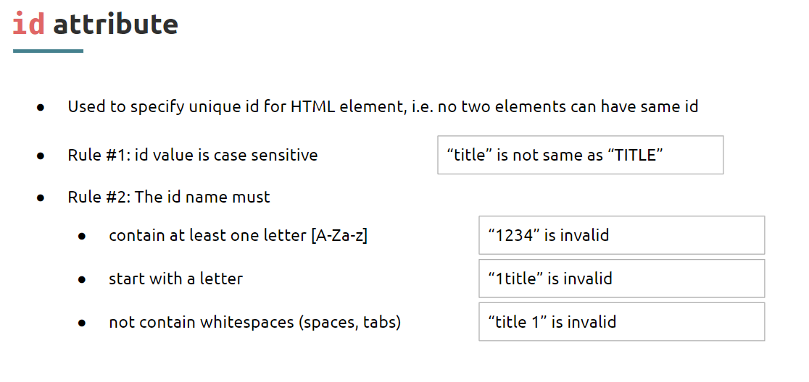

Type of Links
Absolute Links
Absolute Links are Full Web Addesses or Full URLs
Relative Links
Relative Links are Referring to the Local Files of our Folder Structure
But Why we need Relative Links ?
id Attribute
Why we should use id attribute
-
What if We are going to Create a Long Web page with huge number of
Topics ?
-
While User vitis our Web Site, thay will get frustrated if they look
for a Specific Topic.

What is Link Bookmarks ?
- Books marks can be useful to navigate within long pages
-
We can create a Navigation Tab and Link them with Sections within a page
-
Using id attribute of a particular section or Elements we can do this.
What is dead links ?
- Dead Links are often needed, while the creating of a Website
- We could simply use '#' in the href attribute of Anchor tags
- We'll learning about this even more in FE-2